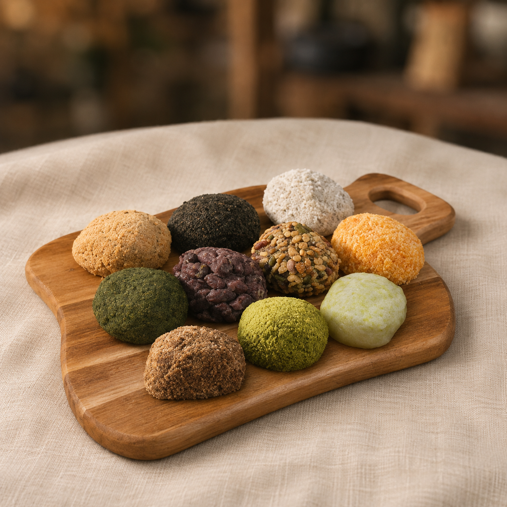
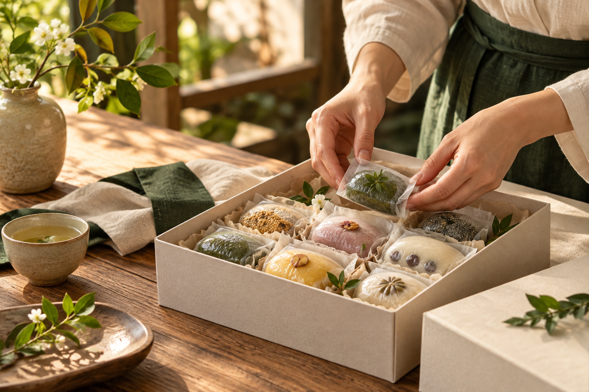
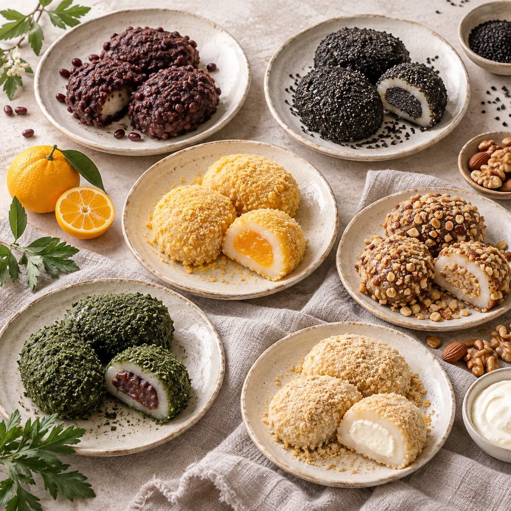

원가와 광고비
객단가보다 상품별 기여이익과 손익분기 주문 단가를 먼저 확인합니다.
2026 / JEJU SIRUWON × LINKPRICE
동문시장 현장 구매와 온라인 재구매를 연결하는 8주 마케팅 실험 제안입니다. 광고비를 쓰는 이유와 계속할 기준을 먼저 정하겠습니다.

제주 시루원 8주 마케팅 실험 제안 · 링크프라이스 이지아
01 왜 지금인가
● 시장 맥락KDI는 2026년 10월 소비 개선이 완만하고 가계 구매력 회복이 제약된다고 분석했습니다. 시루원의 실제 수요를 뜻하는 지표는 아니지만, 광고를 수익 기준으로 운영해야 할 이유입니다.
객단가보다 상품별 기여이익과 손익분기 주문 단가를 먼저 확인합니다.
매장·포장·상세페이지에서 같은 온라인 재주문 경로를 보여줍니다.
상품과 광고군별 링크·주문을 분리해 매주 남는 이익을 봅니다.
자료: KDI 경제동향 2026.10, 제안서 PDF 2쪽. 거시 지표를 시루원의 매출이나 매장 유입으로 해석하지 않았습니다.
제주 시루원 8주 마케팅 실험 제안 · 링크프라이스 이지아
02 무엇을 팔 것인가
● 브랜드 진단제주시 동문로 6-2의 매장 정보가 공개되어 여행 중 발견과 방문 경로를 만들기 좋습니다.
팥·흑임자·귤·혼합·크림 계열을 “처음 주문”, “선물”, “재주문” 맥락으로 정리합니다.
스마트스토어와 외부 판매 흔적을 활용해 제주에서 고른 맛을 집에서도 다시 찾게 합니다.


자료: 공개 매장·메뉴, 제안서 PDF 3~4쪽.
제주 시루원 8주 마케팅 실험 제안 · 링크프라이스 이지아
03 어디서 주문하게 할 것인가
◆ 전환 경로제주 선물, 오메기떡, 동문시장처럼 탐색 의도에 맞는 메시지로 들어옵니다.
맛과 혼합 구성을 보여주되, 실제 판매 옵션·가격은 주문 채널에서 확인하게 합니다.
온라인 주문과 매장 길찾기를 분리해 고객이 바로 다음 행동을 고르게 합니다.
기존 링크를 공식 구매처로 교체하고, 랜딩·후기·포장물의 목적지를 일치시킵니다.
페이지 흐름: 제안서 PDF 4쪽. 링크 점검: 당근 업체 페이지와 modoo 종료 안내.
제주 시루원 8주 마케팅 실험 제안 · 링크프라이스 이지아
04 어디에 쓸 것인가
◆ 일 매체비 제안쇼핑검색 일 2만 원과 애드부스트 쇼핑 일 3만 원을 먼저 집행합니다. 재방문 소재는 초기 성과를 확인한 뒤 협의합니다.
구매 의도가 뚜렷한 검색어 · 주력 상품
상품 연동 · 전환 가치 자동 최적화
재구매·선물 시즌 메시지와 예산 별도 협의
30일 기준 150만 원
두 매체의 지출과 주문 기여이익을 8주 동안 검증합니다.
재방문 소재·운영·제작비는 별도 협의예산은 제안서 PDF 5쪽을 재구성한 수정안입니다. 네이버는 부스트업 노출 확대 시 일 3만 원 이상을 권장합니다. 필수 최소 집행액이나 성과 보장 수치는 아닙니다.
제주 시루원 8주 마케팅 실험 제안 · 링크프라이스 이지아
05 남는 것이 있는가
◆ 손익분기 시뮬레이션아래는 시루원 내부 데이터가 없는 상태의 계획용 가정입니다. 2~4% 전환율에서는 광고비를 회수하지 못할 수 있습니다.
일 5만 원 × 30일 ÷ (1,875 유입 × 객단가 45,000원 × 기여이익률 40%)
손익분기에는 기여이익 150만 원, 위 가정에서는 매출 375만 원이 필요합니다.
객단가·기여이익률·유입 단가 가정은 제안서 PDF 6쪽, 예산·결과는 수정안입니다. 유입 단가는 단순화한 값이며 실제 과금·성과를 뜻하지 않습니다.
제주 시루원 8주 마케팅 실험 제안 · 링크프라이스 이지아
06 어떻게 검증할 것인가
◆ 8주 실행안상품별 기여이익, 판매 채널·상세페이지·랜딩 CTA·추적 링크 점검
쇼핑검색과 애드부스트 쇼핑을 분리해 지출·유입·구매 전환 확인
저성과 검색어 제외, 선물·혼합 구성과 소재별 성과 비교
주문 기여이익·재구매 신호를 보고 확대·유지·중단 협의
실행 계획: 제안서 PDF 7쪽. 착수 전 매출·마진·주력 상품·광고 계정 자료를 확인해야 합니다.
제주 시루원 8주 마케팅 실험 제안 · 링크프라이스 이지아
NEXT STEP
30일 기준 매체비는 150만 원입니다. 먼저 실제 마진과 상품별 수익성을 확인하고, 4주차 중간 점검과 8주차 최종 판단의 근거를 매주 공유하겠습니다.
제안서 PDF 보기 ↗매체비는 제안 금액입니다. 재방문 소재와 운영·제작 수수료는 별도 협의하며, 성과를 보장하지 않습니다.
제주 시루원 8주 마케팅 실험 제안 · 링크프라이스 이지아